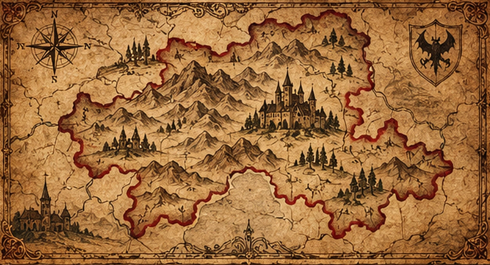

Willkommen in der Welt des Übernatürlichen
Seit Jahrhunderten erzählen Menschen von Wesen, die im Schatten unserer Welt existieren: blutsaugenden Vampiren, heulenden Werwölfen, verführerischen Sirenen und ruhelosen Geistern. Diese Chroniken versammeln Überlieferungen, historische Hintergründe und schaurige Geschichten aus aller Welt.
Ursprünge der Legenden
Die Mythen um übernatürliche Wesen entstanden aus einer Mischung von Volksglauben, religiösen Vorstellungen, unerklärlichen Naturphänomenen und menschlichen Ängsten. In Zeiten von Krankheit, Krieg und Dunkelheit suchten die Menschen nach Erklärungen für das Unbegreifliche – und erschufen dabei Legenden, die bis heute weitererzählt werden.
Ob an einem knisternden Herdfeuer, in alten Chroniken oder in den Schauergeschichten des viktorianischen Zeitalters: Jede Kultur gab ihren Schatten einen eigenen Namen.
Die bekanntesten Wesen und ihre Wurzeln
Bestiarium der Nacht
Ein illustriertes Verzeichnis jener Kreaturen, die unsere Sagen und Albträume bevölkern.
Transilvanien
Zwischen Karpaten, Burgen und blutroten Legenden

Das Land hinter den Wäldern
Transilvanien, auch Siebenbürgen genannt, ist eine historische Region im heutigen Rumänien. Über Jahrhunderte prägten Daker, Römer, ungarische Herrscher, sächsische Siedler und das Habsburgerreich ihre vielschichtige Geschichte. Mittelalterliche Städte, Bergpässe und Wehrburgen schufen die Kulisse für zahlreiche Erzählungen.
Vlad III. und der Schatten Draculas
Vlad III. Drăculea, Fürst der Walachei im 15. Jahrhundert, war für seine grausamen Strafen berüchtigt. Seine historische Person ist jedoch nicht mit dem fiktiven Vampir gleichzusetzen. Bram Stokers Roman Dracula von 1897 verband den Namen mit einer unheimlichen, literarischen Gestalt und machte die Region international zum Schauplatz gotischer Schauerfantasien.
Burgen, Aberglaube und nächtliche Besucher
Die Burg Bran wird heute oft als „Draculas Schloss“ vermarktet, obwohl ihre direkte Verbindung zum historischen Vlad III. schwach ist. In der rumänischen Folklore finden sich zudem Geschichten über strigoi – ruhelose Tote oder geisterhafte Wesen. Solche Überlieferungen verschmolzen später mit den Vampirbildern der Literatur und des Films.
Die Geburt einer düsteren Legende
Nebelverhangene Karpaten, einsame Dörfer und uralte Friedhöfe machten Transilvanien zum Sinnbild des Unheimlichen. Die berühmtesten Schauergeschichten sind dabei eine Mischung aus realer Geschichte, Volksglauben und künstlerischer Erfindung.
Die Stunde der Nacht
Wo liegt die Welt bereits im Schatten? Die Weltuhr und die Tag-/Nacht-Anzeige beziehen ihre Daten aus der Open-Meteo-API. Die Zeiten werden alle fünf Minuten online abgeglichen.
Die Mondphase
Mondphase aus der Open-Meteo-API (tagesbezogene astronomische Daten). Internetverbindung erforderlich.
News & Sichtungen
✦ Aus dem fiktiven Archiv der Nacht: Die folgenden Meldungen sind erfundene Schauergeschichten, keine bestätigten Sichtungen. ✦